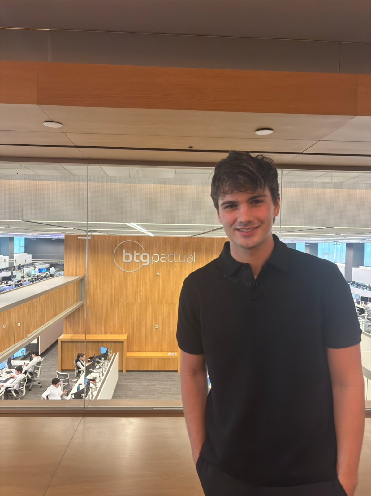
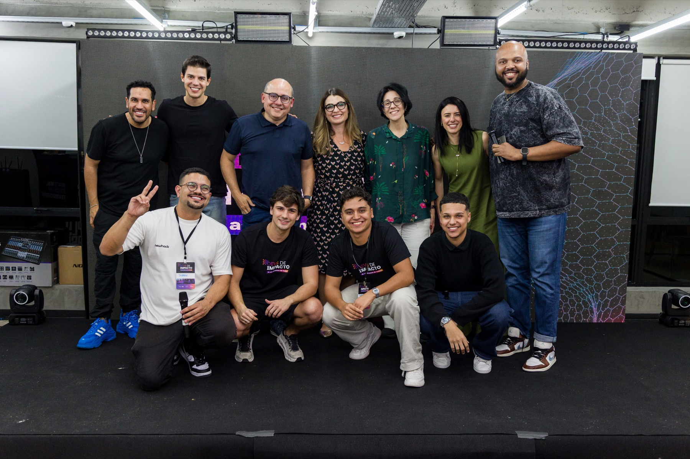
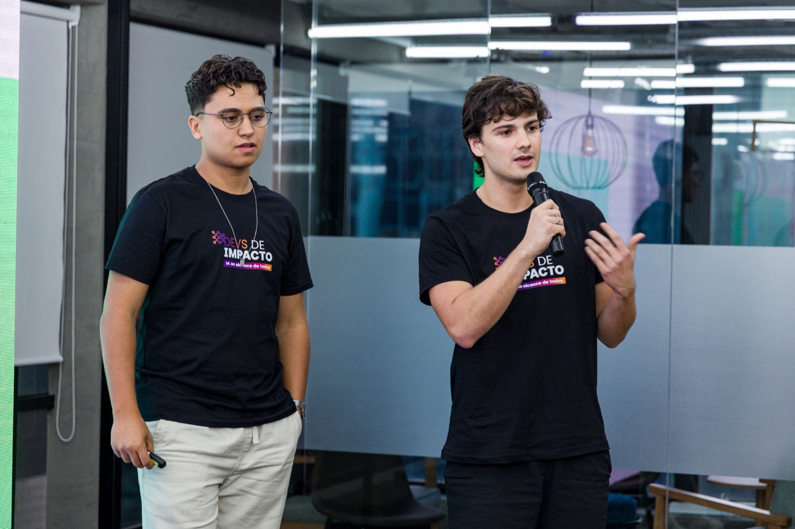
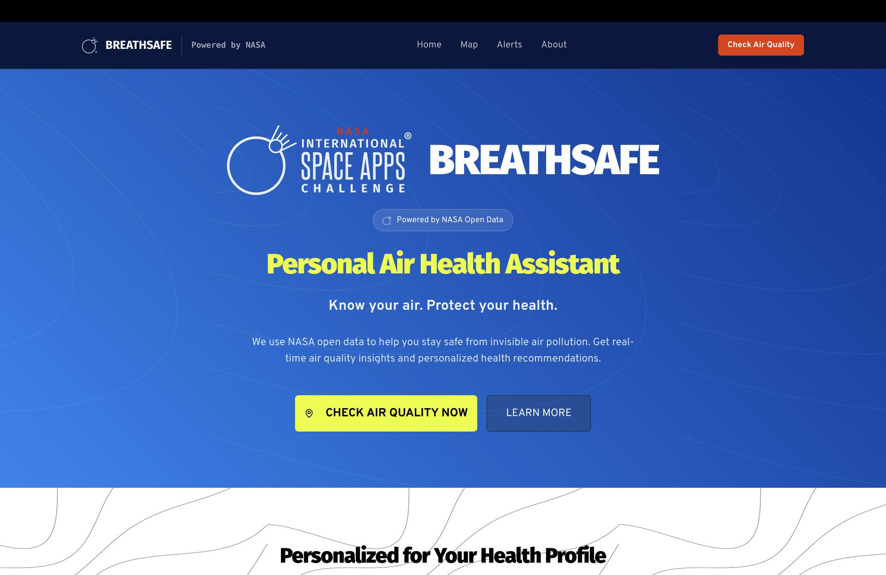
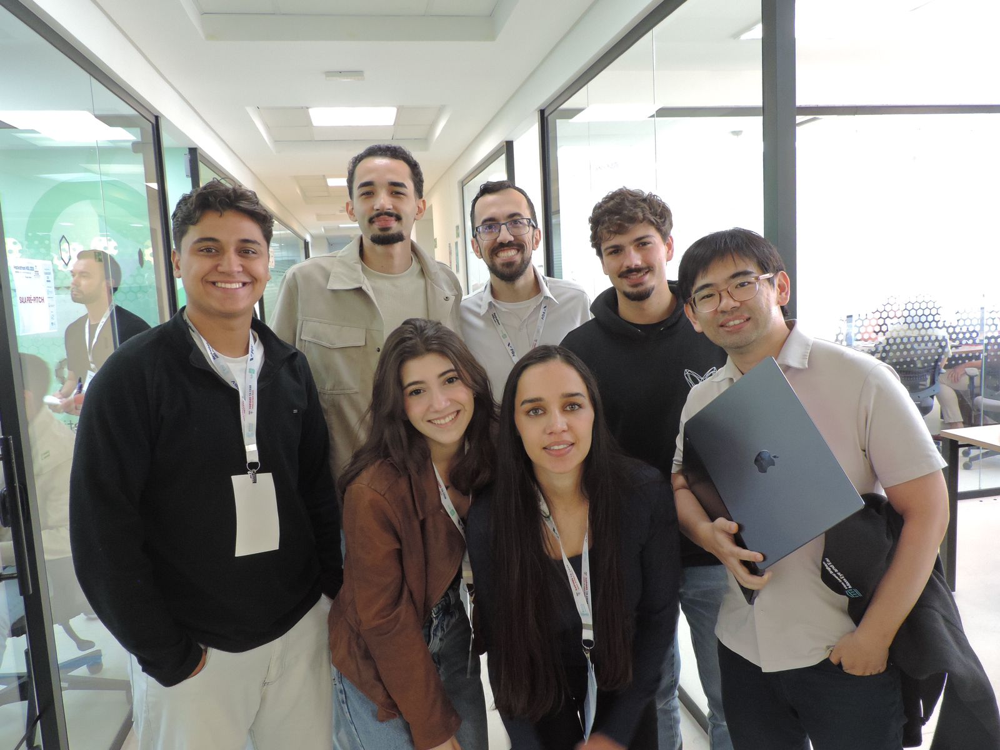
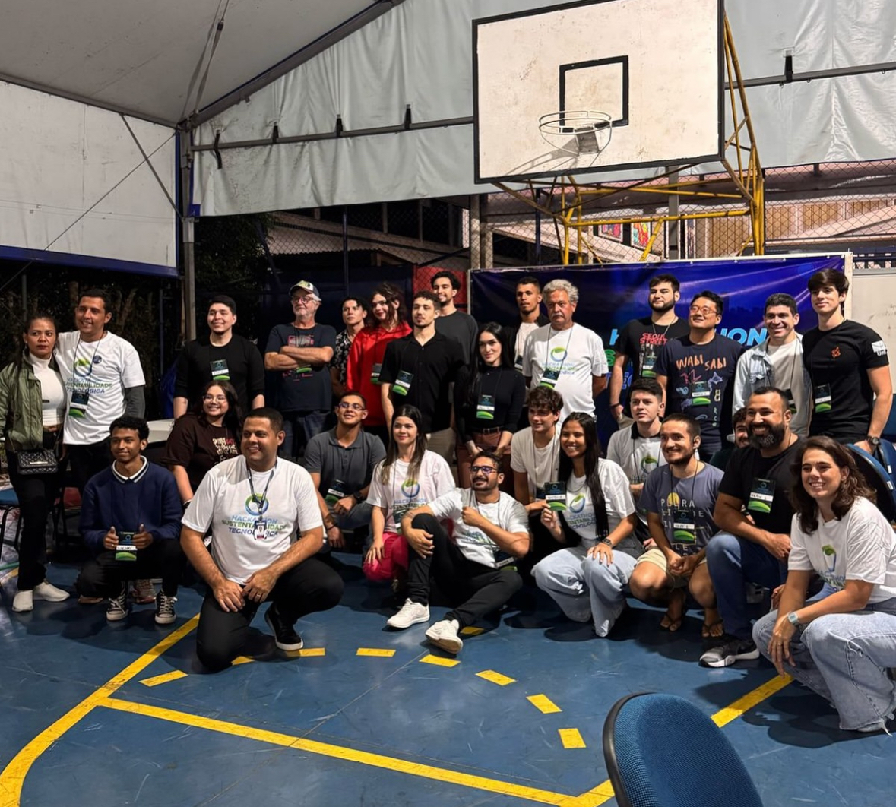
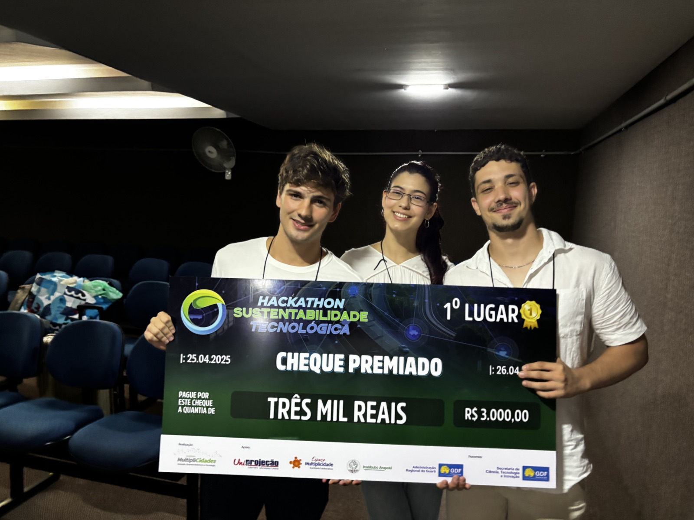

BTG Pactual | Sep 2025 to Nov 2025 | São Paulo, Brazil
Software Engineering Intern in Automation & Cloud. Built integrations across AWS, Azure and internal microservices to automate operational workflows, reducing around 30 hours/month of manual work and improving data reliability.
Stack: Python, APIs, AWS, Azure, microservices, event-driven workflows

RAIA / ICMC-USP | Feb 2026 to Present | Brazil
Computer Vision Researcher building a modular road-damage analysis pipeline for pothole detection, semantic segmentation and severity estimation on Brazilian roads. Comparing YOLO, Faster R-CNN, SAM, Attention U-Net and zero-shot depth models.
Stack: YOLO, Faster R-CNN, SAM, Attention U-Net, Depth Anything, Data Augmentation
Grupo RAIA
Road damage AI research
OpenAI Hackathon: Farmácia Popular Assistant
One of six awarded teams, R$10k prize


Built an access assistant for Brazil's Farmácia Popular program, combining voice support, chat, OCR over SUS prescriptions and LLM-guided eligibility information so users could understand benefits and next steps.
Stack: voice agent, chatbot, OCR, LLMs, public health access
Participa DF
3rd Place Solo, among 121 participants, R$2k prize
Built a full-stack civic participation product independently, placing 3rd among 121 participants by turning public-sector data and citizen input into a clear digital experience.
Stack: TypeScript, full-stack, civic tech, product prototyping
Academic Integrity Platform
3rd Place, DF Social Control Hackathon | Apr 2026, R$2k prize
Built an academic work review platform with PDF ingestion, OCR, LLM processing, Socratic questioning via Gemini, RAG over student history and external source validation with Firecrawl.
Stack: OCR, RAG, Gemini, Firecrawl, LLM workflows
Credit Card Fraud Detection
Google Cloud, Apr 2026, 0.99 AUC-PRC
Developed an end-to-end ML pipeline on BigQuery and Vertex AI for credit card fraud detection. Modeled an imbalanced classification problem, reached 0.99 AUC-PRC and deployed the model to a Vertex AI endpoint.
Stack: BigQuery, Vertex AI, AUC-PRC, endpoint deployment, threshold analysis
NASA Space Apps: BreathSafe
Global Nominee, 3rd Place Local | Oct 2025

Built a mobile-first air-health assistant for hyperlocal pollutant exposure forecasting using NASA TEMPO data, 24 to 72h forecasts, geolocation, fuzzy logic and a local LLM with RAG over scientific articles.
Stack: Ollama, RAG, NASA TEMPO, fuzzy logic, nowcasting
Harvard HSIL Hackathon: CRISPR Diagnostic Concept
Harvard Health Systems Innovation Lab (HSIL) Hackathon 2026

Co-designed an AI-assisted concept for a CRISPR-based diagnostic strip to detect multidrug-resistant bacteria, translating biology constraints into candidate sequence exploration, workflow design and a product pitch.
Stack: AI-assisted design, bioinformatics, synthetic biology, health systems innovation
Construction Safety Wearable
Computer Vision + Embedded Systems
Built a wearable safety prototype with ESP32, camera-based computer vision and vibration feedback to warn workers when entering unsafe zones. Ran detection experiments with YOLO, OpenCV and Ultralytics.
Stack: ESP32, camera, YOLO, OpenCV, Ultralytics, embedded AI
Real-time Waste Detection with Gamification
1st Place, Sustainability Technology Hackathon, R$3k prize


Developed a real-time waste detection solution with YOLOv8 and transfer learning, reaching around 90% accuracy in 24 hours. Added gamification to reward correct disposal and reduce sorting mistakes.
Stack: YOLOv8, computer vision, transfer learning, gamification
Project Pupila
Computer vision system for retail analytics, designed to estimate customer flow, dwell time and engagement by zone in physical stores.
Stack: computer vision, retail analytics, Jupyter Notebook
Coding AI Agent
Autonomous coding and browser-automation agent built with LangChain, LangGraph and Firecrawl MCP, integrating Python and Node.js for terminal-based workflows.
Stack: LLM agents, LangChain, LangGraph, Firecrawl MCP, Python
Local AI Agent
Private local RAG agent using LangChain and Ollama to answer questions over real restaurant reviews with retrieval-augmented responses.
Stack: Ollama, LangChain, RAG, local LLMs
NLP Research with DistilBERT
Built an NLP pipeline for classifying complex phenomenological texts using DistilBERT fine-tuning with Hugging Face, enabling structured extraction and categorization of subjective narratives.
Stack: DistilBERT, Hugging Face, NLP, fine-tuning